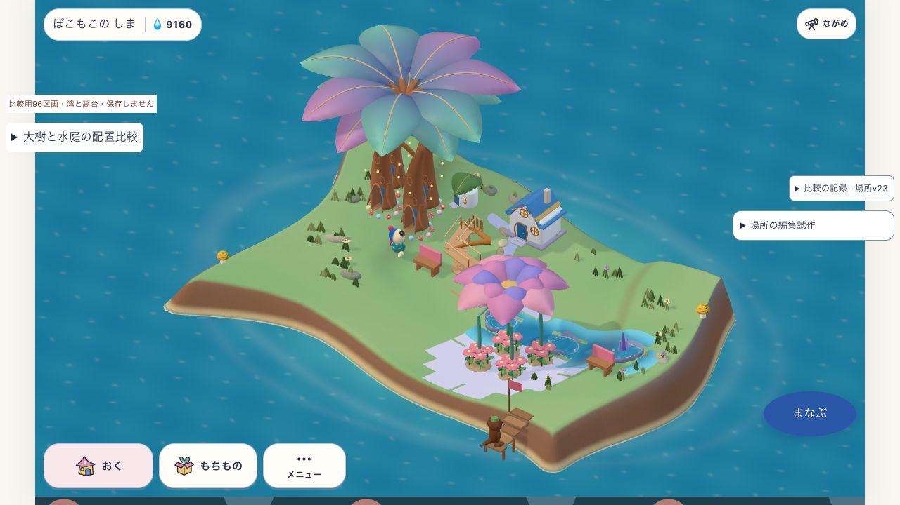
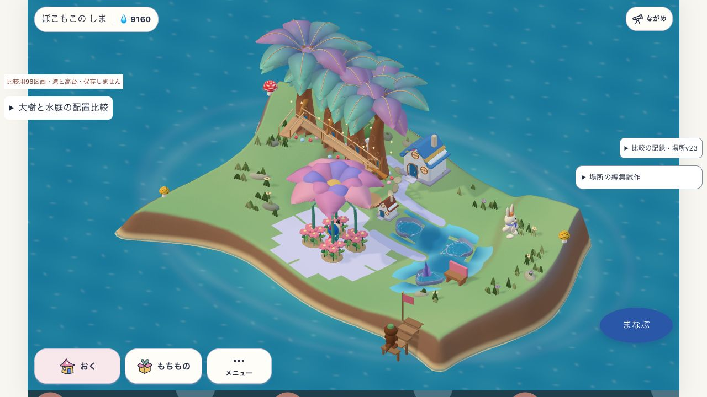

2026-10-24 · mature-composition-v1 · 本体renderer / place-outline-v26
同じ持ち物から、
大樹と水庭のある二つの景色へ。
組み替えて暮らしが続くことは確認。目標の美術にはまだ届いていません。成熟した試験データから始め、通常の移動コマンドでA→B→Aと往復しました。
同じ土地・持ち物・成熟度。配置だけを変える

A：大樹を塊にし、花の庭と水辺を南東へ寄せた配置。
B：大樹を列にすると回廊が延び、水辺を曲げ、花の庭を中央へ移動。木4・水鉢3・水路2・花4・ベンチ2・家2。土地・地形・所有ID・成熟・残高を保持。Aへ戻した所有物配列も一致しました。カメラは通常の「しま全体」。
成熟は明示した試験入力です。自然に育てた証拠、本人の保存、公開版の完成とは区別します。
何が成立したか
| 検証 | 結果 |
|---|
| 固定模型の切替ではないか | 同じ所有物を通常move/unstore/storeで組み替え。A↔B各13操作。床と場所を再計算。 |
| 暮らしが続くか | A/Bの新しい回廊利用と水辺利用を描画後に受理。場所のrevision一致を照合。 |
| 地形も変えられるか | 成熟したBの端に湾を追加、Undo/Redoで復元。回廊利用中は拒否し、住人が地上へ戻ると変更できた。 |
| 操作の待ちは減ったか | 初回30操作3498ms。改善後13操作3132ms、途中24回描画・最大間隔300ms。復路2677ms・最大250ms。総時間はまだ重い。 |
各一回のPC上の観測です。試験用一括配置の改善であり、前回の単一地形編集の約1.3秒を解消した値ではありません。全メッシュ衝突・実機・子どもの理解は未確認。
見た目の難所が、具体的になった
大きな場所の違いは出せました。一方、木の根元と独立した階段、花の下の白い格子状の面、水庭の岸、島の長い土壁に継ぎ目が残ります。部品の数を増やすだけでは埋まらない差です。次は根・入口・岸・通路が同じ地面につながる部分の作り方を検証します。
 参考native05。所有数・構図・カメラが違うため、同条件の品質点数にはしません。場所と地形が連続して見える点を比較します。
参考native05。所有数・構図・カメラが違うため、同条件の品質点数にはしません。場所と地形が連続して見える点を比較します。